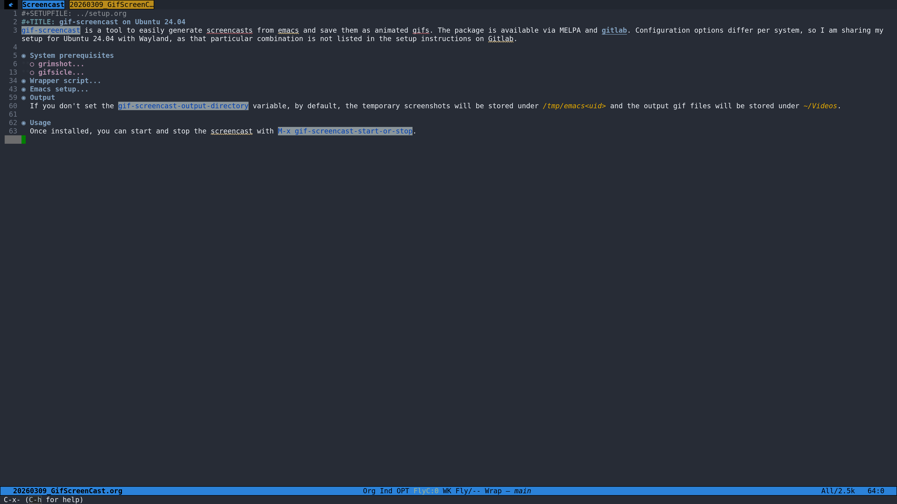

gif-screencast on Ubuntu 24.04
Table of Contents
gif-screencast is a tool to easily generate screencasts from emacs and save them as animated gifs. The package is available via MELPA and gitlab. Configuration options differ per system, so I am sharing my setup for Ubuntu 24.04 with Wayland, as that particular combination is not listed in the setup instructions on Gitlab.
1. System prerequisites
1.1. grimshot
The Gitlab instructions mention that you can use flameshot for creating the initial screenshots. Because I already use grimshot, and because I don't feel the need to have multiple tools for generating screenshots on my system, I set up grimshot, which can be installed with:
sudo apt-get install grimshot
1.2. gifsicle
gifsicle is an optional tool for gif-screencast that optimizes the gif file. If you don't install it, gif-screencast will still run and produce a gif output, but it will give a warning. gisicle was not available via my package manager, but can be build from source (github):
# * Enviornment
cd "${HOME}/Software" || exit
mkdir -p "${HOME}/Software"
# * Git clone
git clone https://github.com/kohler/gifsicle.git
# * Build
cd "${HOME}/Software/gifsicle" || exit
autoreconf -i
./configure
make
sudo make install
2. Wrapper script
The following wrapper script around grimshot will be called by gif-screencat every time you switch a buffer/window to create a screenshot:
/usr/bin/grimshot save active "${1}"
Save this script and make it executable, e.g., .
3. Emacs setup
Make sure to point the gif-screencast-program variable to the wrapper script.
(use-package gif-screencast :ensure t :config (setq gif-screencast-program "/path/to/grimshot_screencast" gif-screencast-args '() gif-screencast-convert-program "convert" gif-screencast-scale-factor 1.5 gif-screencast-output-directory "/output/folder") )
4. Output
If you don't set the gif-screencast-output-directory variable, by default, the temporary screenshots will be stored under /tmp/emacs<uid> and the output gif files will be stored under ~/Videos.
5. Usage
Once installed, you can start and stop the screencast with M-x gif-screencast-start-or-stop.
6. Example

Figure 1: gif-screencast example